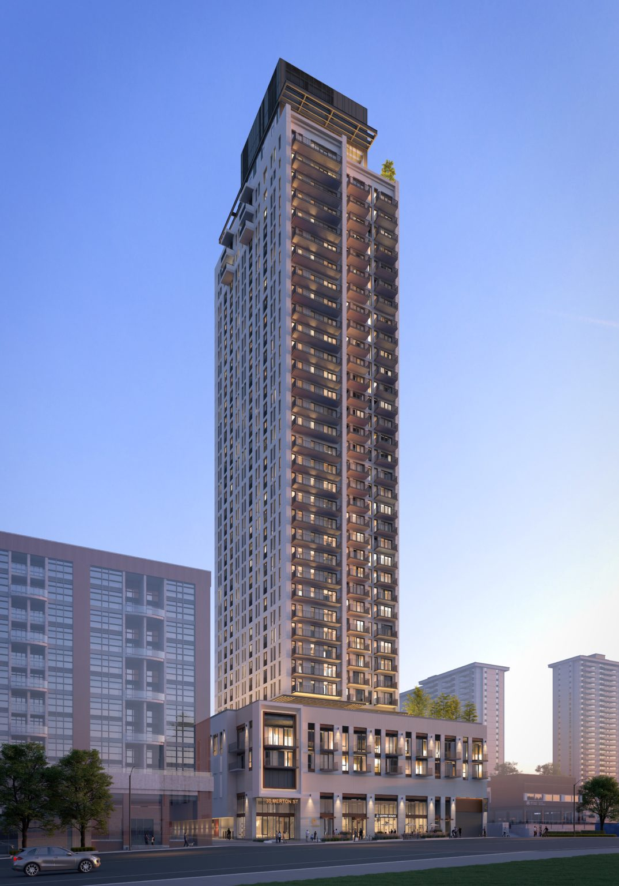

Engineering challenge
Project context and technical challenge
Developing efficient high-rise reinforced-concrete systems, including transfer elements, while coordinating architecture and building services.
37-storey, 125.3 m mixed-use residential tower with 322 rental units, commercial parking and street-level retail.
← Back to portfolio
This information distinguishes the overall project context from my individual engineering role.
Developing efficient high-rise reinforced-concrete systems, including transfer elements, while coordinating architecture and building services.
Structural design of reinforced-concrete columns, shear walls, transfer slabs and beams; design optimization and multidisciplinary coordination.
Project information describes the overall project context. The “My Contribution” section identifies the engineering work performed by Dr. Moniruzzaman Moni as part of the identified employer or project team.